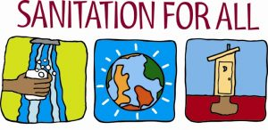
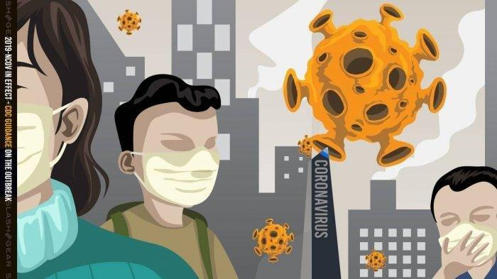

ACTION PLAN FLU BURUNG
Welcome to the blog of Ignes Volucrem

4 Action Plan
Untuk Wabah Flu Burung
EDUKASI
Dilaksanakan pelatihan tentang flu burung dan praktik terkait K3 di dalam lingkungan tenaga kerja dan masyarakat dengan upaya pencegahan penyebaran melalui kebersihan dan sanitasi.

SANITASI
Kegiatan ini dilakukan secara rutin di area sekitar peternakan di bawah arahan pemimpin daerah setempat.

PERLINDUNGAN
Melakukan perlindungan terhadap kelompok risiko tinggi dan peningkatan biosekuriti pada daerah yang beresiko terjadi penularan flu burung seperti peternakan unggas.
DETEKSI DINI VIRUS
Memasang alat termo scanner di bandara atau pelabuhan disejumlah daerah. Alat ini akan mendeteksi suhu tubuh para penumpang pesawat atau bandara yang masuk ke Indonesia setelah perjalanan dari luar negeri.